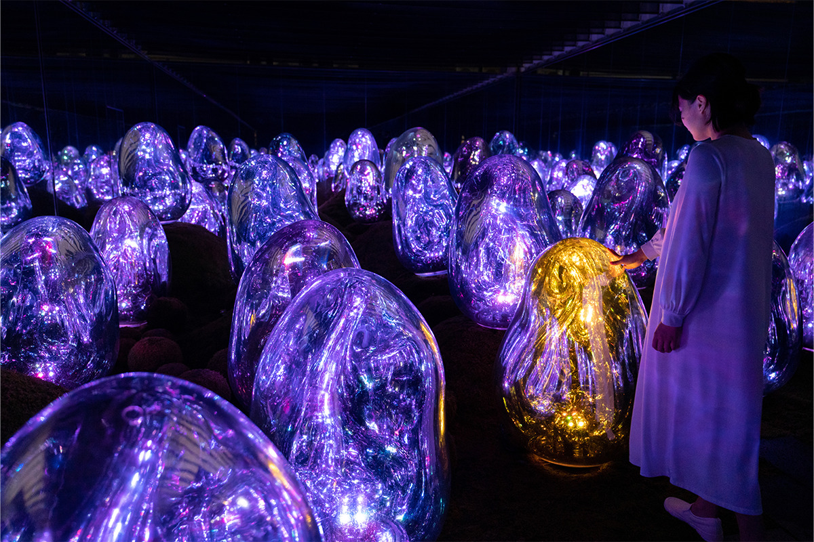
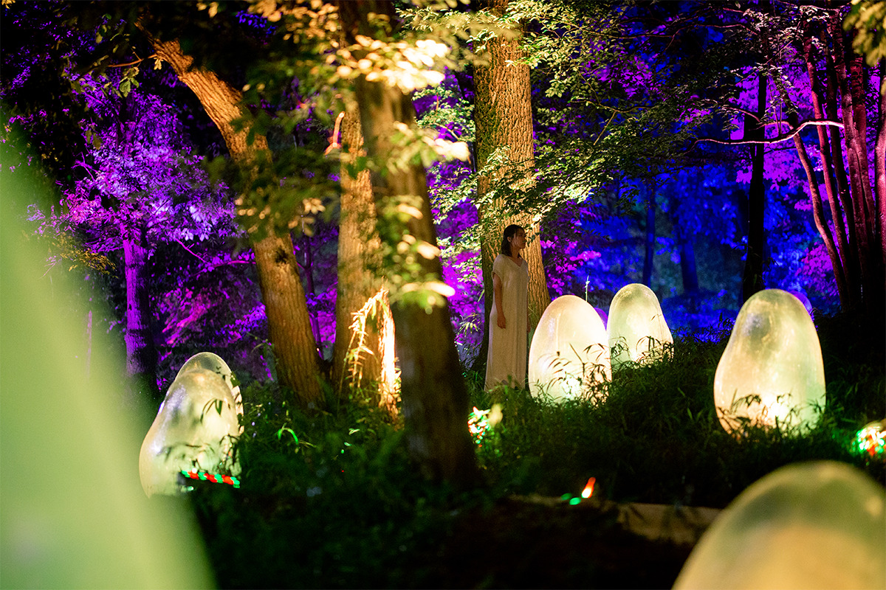
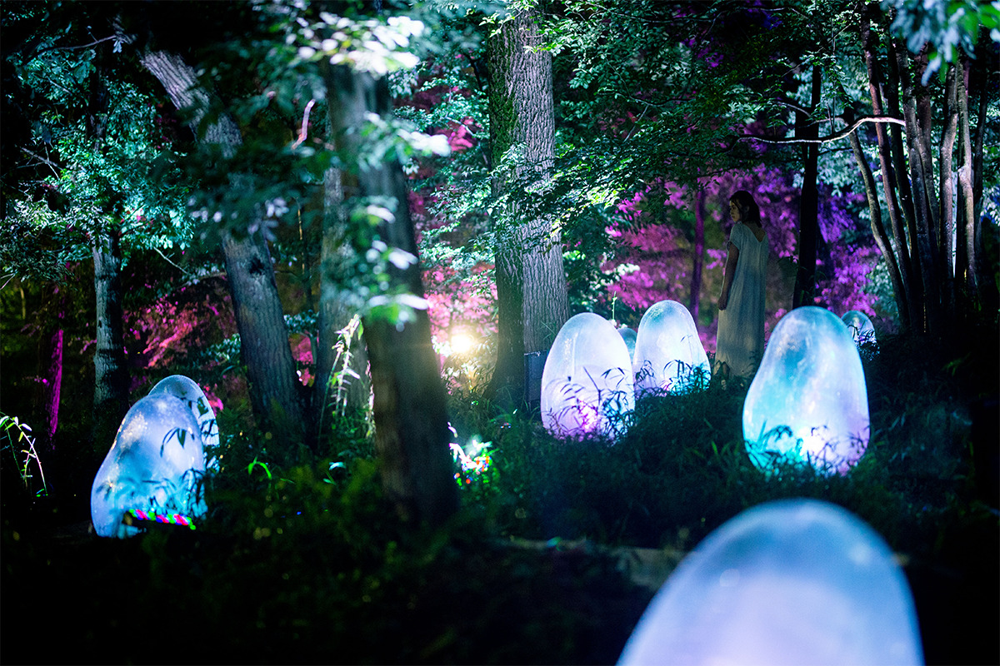
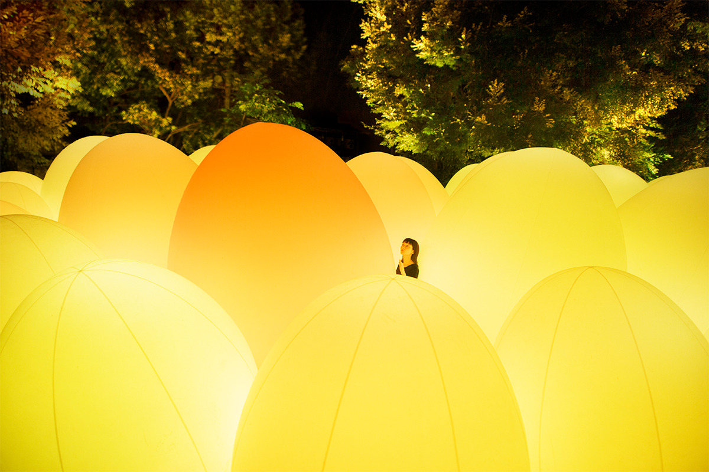
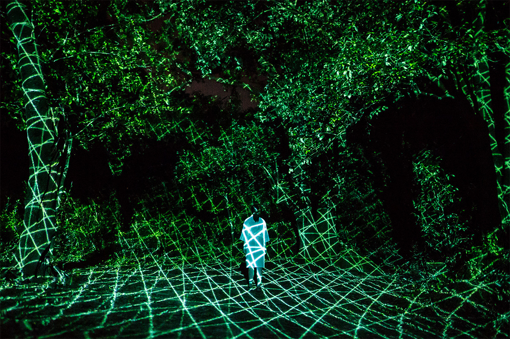
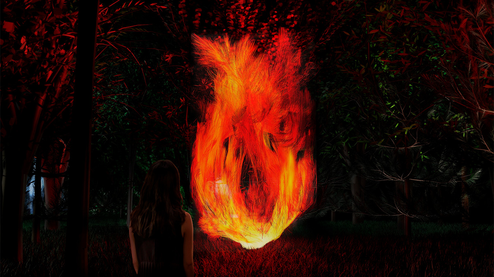
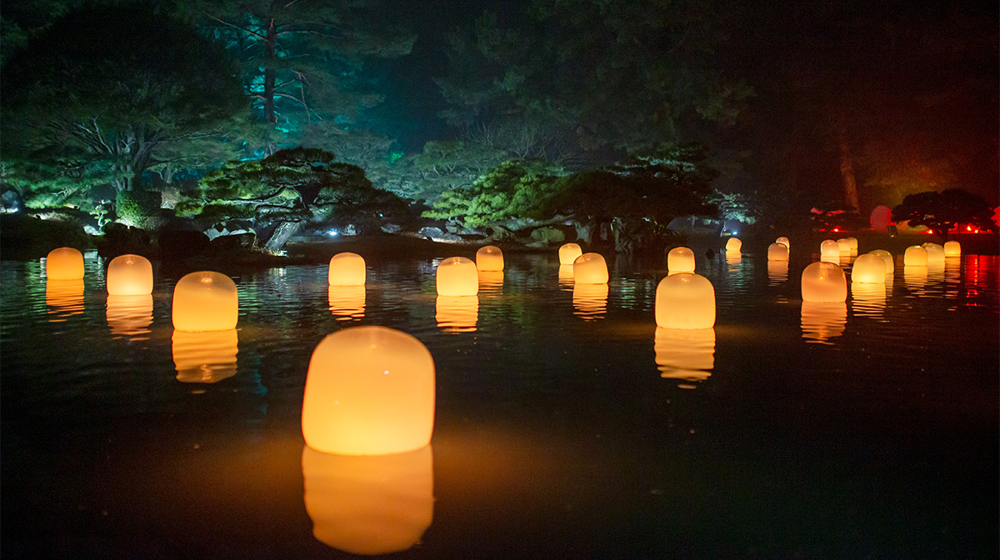
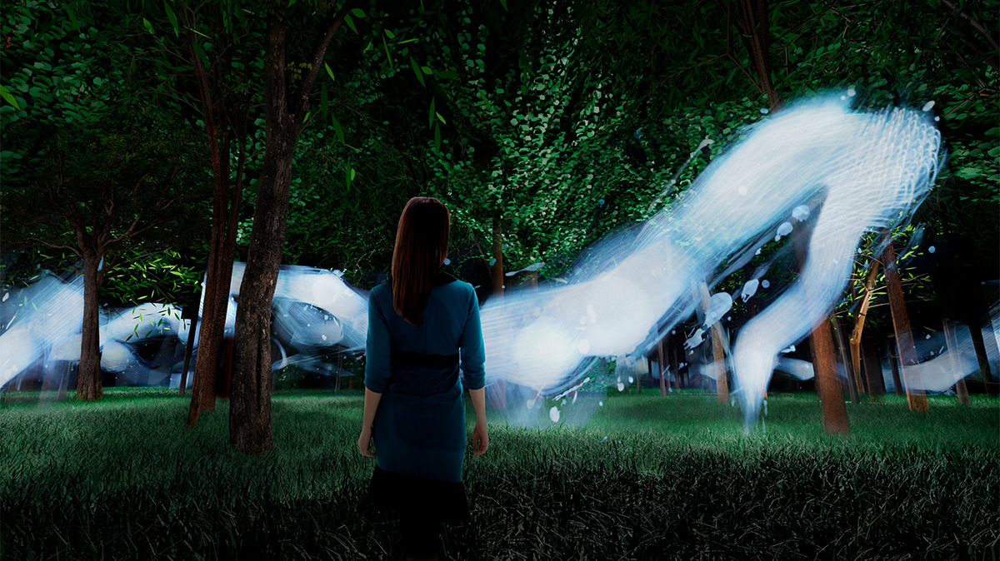

Префектура Осака · Нагаи · искусство
Ночь в ботаническом саду Нагаи: светящиеся работы teamLab среди деревьев Осаки

Днём ботанический сад Нагаи на юге Осаки остаётся обычным садом с камелиями, розами и прудом. После заката его деревья, лужайки и вода становятся частью постоянной выставки арт-коллектива teamLab, которая открылась здесь в 2022 году.
Сад
Деревья вместо выставочного зала
Ботанический сад Нагаи находится в одноимённом парке на юге Осаки. На территории около 24 гектаров растёт примерно 1200 видов растений. Весной 2022 года сад обновили: в камелиевом, розовом и других садах высадили новые сорта, а 29 июля 2022 года здесь открылась постоянная ночная выставка «Ботанический сад teamLab Осака» (teamLab Botanical Garden Osaka).
Японский коллектив teamLab известен работами на стыке искусства и технологий. Для этой выставки художники ничего не строили отдельно и использовали сам сад как он есть. В основе лежит их идея «оцифрованной природы»: природа становится искусством, оставаясь природой. Отсюда и главный вопрос выставки. Человек, считают авторы, плохо ощущает время длиннее собственной жизни, и через растения, которые жили в прошлом, живут сейчас и будут жить после нас, teamLab пробует показать эту долгую непрерывность.
Камелии
Микрокосм, который отзывается


В камелиевом саду между кустами стоят округлые скульптуры, похожие на большие яйца. Они выглядят забавно и немного странно, а ведут себя ещё необычнее. Если толкнуть скульптуру или её качнёт ветер, она издаёт звук и сама поднимается. Соседние скульптуры отвечают тем же звуком одна за другой, и волна прокатывается по всему саду.
Днём их поверхность отражает деревья и небо. После заката скульптуры начинают светиться изнутри и переливаются 57 оттенками, которые авторы называют «жидким цветом света». Сама выставка открыта только вечером, но эту работу можно увидеть и днём, во время обычного посещения сада.
Эвкалипты
Лес, который чувствует прикосновение

В эвкалиптовой роще плотными рядами стоят светящиеся овоиды, яйцевидные фигуры. Каждая живёт сама по себе. Когда человек раздвигает их руками или их клонит ветер, овоид выпрямляется, меняет цвет и звучит своей нотой. Соседние подхватывают тот же цвет и звук, и свет бежит по роще дальше. В тишине, когда ветра нет и никто их не трогает, овоиды медленно мерцают.
Если из глубины на вас катится волна света, значит, там, за деревьями, кто-то идёт. В этом лесу чужое присутствие ощущаешь острее, чем обычно.
Вторичный лес
Рисунок, который не повторится

Во вторичном лесу, выросшем на месте вырубки, стоит войти в работу и немного постоять на месте: вокруг рождаются новые пучки линий и расходятся по деревьям. Из-за них стволы и кроны превращаются в плоские слои, как на рисунке. Картину в реальном времени рисует компьютерная программа. Она реагирует на движение людей и никогда не повторяет прежнее состояние, поэтому то, что вы видите сейчас, больше не увидит никто.

Там же, во вторичном лесу, горит «Вселяющееся пламя». Огонь здесь нарисован линиями, которые повторяют потоки горящего газа, и переведён в плоскость с помощью «ультрасубъективного пространства», как teamLab называет свой способ строить изображение. С пламенем можно поиграть. Если подойти к нему со смартфоном, на котором установлено приложение «teamLab: FIRE», огонь загорается на экране, и его можно унести с собой. Поднесите телефон к телефону другого человека, и пламя перейдёт к нему. Так огонь передаётся от человека к человеку и расходится по миру, а все его огоньки отмечаются на общей карте.
Пруд
Лампы на воде

На большом пруду плавают лампы, и каждая дрейфует сама по себе. Когда рядом останавливается человек или лампу наклоняет ветер, она ярко вспыхивает и звучит. Свет переходит к соседней лампе, потом к следующей, и так один раз проходит по всему пруду, зажигая каждую. По этим вспышкам понимаешь, что на берегу ты не один. Если ветра нет и людей рядом нет, лампы медленно мерцают. Абажуры для них сделаны из муранского, то есть венецианского, стекла.

Днём сад Нагаи хорош сам по себе, но в такую ночь в него стоит вернуться, чтобы увидеть, как те же деревья и вода отвечают на шаги и ветер.
«Ботанический сад teamLab Осака»
- Адрес
- префектура Осака, Осака, район Хигаси-Сумиёси, Нагаи-коэн, 1-23, ботанический сад Нагаи
- Часы работы
- 19:30–22:00, последний вход в 21:00 (по данным 2022 года, часы меняются по сезонам)
- Сайт
- teamlab.art
Фото: teamLab.